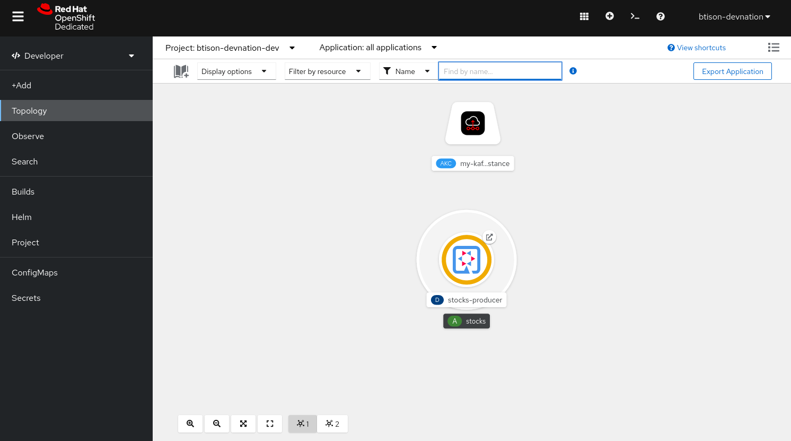
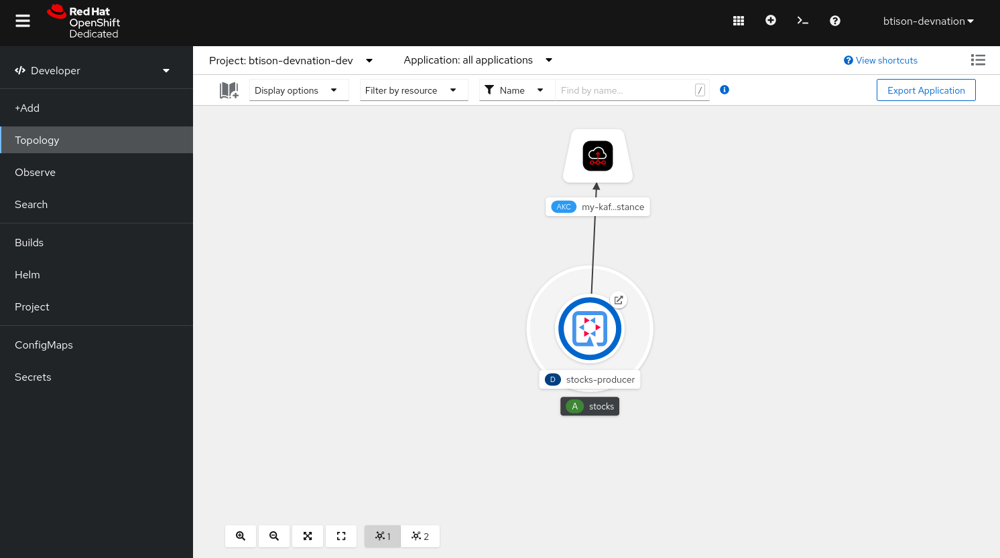
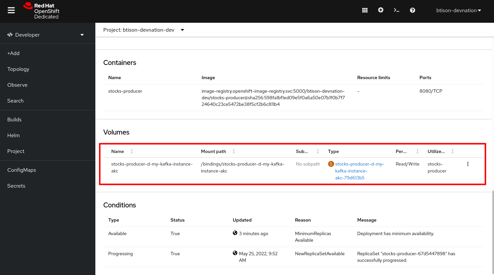
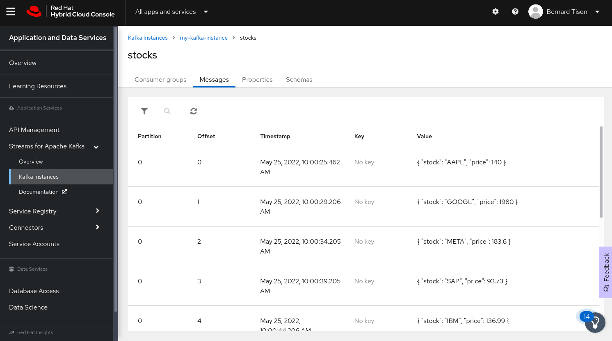
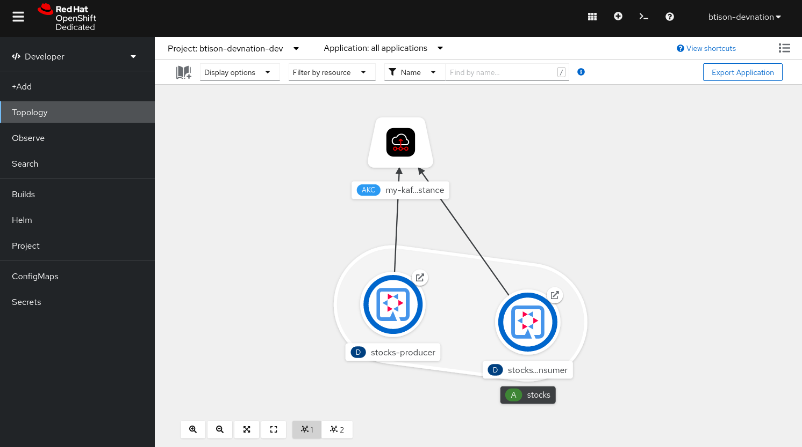
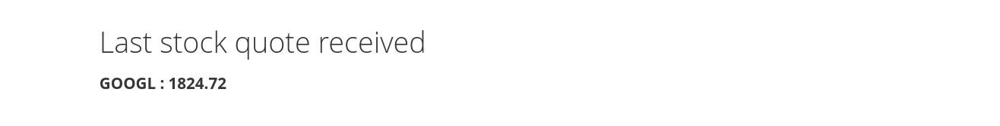

Binding a Quarkus application to OpenShift Streams for Apache Kafka
As a developer of applications and services, you can connect Quarkus applications to Kafka instances in OpenShift Streams for Apache Kafka.
Quarkus is a Kubernetes-native Java framework made for Java virtual machines (JVMs) and native compilation, and optimized for serverless, cloud, and Kubernetes environments. Quarkus is designed to work with popular Java standards, frameworks, and libraries like Eclipse MicroProfile and Spring, as well as Apache Kafka, RESTEasy (JAX-RS), Hibernate ORM (JPA), Infinispan, Camel, and many more.
You can bind a Quarkus application to your Kafka instance using Kubernetes Service Binding. Service Binding allows you to communicate connection details and secrets to an application to allow it to bind to a service. In this context, a service can be anything: a Kafka instance, a NoSQL database, etc. By using Service Binding, we no longer need to configure connection details (host, port), authentication mechanisms (SASL, OAuth) and credentials (username/password, client id/client secret) in an application. Instead, Service Binding injects these variables into your application container (as files or environment variables) for your application to consume. The Quarkus Kubernetes Service Binding extension enables Quarkus applications to automatically pickup these variables, injected as files, from the container’s filesystem, removing the need to specify any configuration settings in the application resources (e.g configuration files) themselves.
Deploying a Quarkus producer application
As the first task, you will deploy a Quarkus application that produces messages to a Kafka instance. It is a simple application that sends stock price messages at a regular interval to a Kafka topic.
The source code of this Quarkus application can be found in this GitHub repo.
We’ve pre-build the container image with the Quarkus application so that you can easily deploy it in your OpenShift project on the Developer Sandbox.
To deploy the Quarkus application:
-
Make sure you are in the Developer Perspective of your sandbox OpenShift environment.
-
In the navigation menu on the left, click +Add.
-
Make sure that your OpenShift Project, which you can see at the top of the Add window, is set to
{username}-dev(where{username}is your username in the sandbox OpenShift environment). -
Click on the Container images card.
-
In the Image name from external registry field, enter:
quay.io/btison/stocks-kafka-producer -
In the Runtime icon field, select
quarkus. -
Enter
stocksin the Application name field. -
Enter
stocks-kafka-producerin the Name field. -
Uncheck the Create a route to the Application check box.
-
Leave the other fields set to their default values and click the Create button. This will create a new OpenShift Deployment for your Quarkus application.
-
You will see the deployment of your Quarkus application in the Topology screen.
The icon of your Quarkus application should have a yellow circle around it, indicating that the application is misconfigured and failing to enter a healthy state. -
Click on the icon of your Quarkus application. This will open a panel on the right-hand-side of your screen. Click on the Resources tab. You will see the Pods of your Deployment. Currently you only have a single pod.
-
Click on the View logs link next to the pod. In the logs of your application, you will see an error stating the application is misconfigured and is missing configuration properties to be able to connect to Kafka.
exec java -Dquarkus.http.host=0.0.0.0 -Djava.util.logging.manager=org.jboss.logmanager.LogManager -XX:+ExitOnOutOfMemoryError -cp . -jar /deployments/quarkus-run.jar May 25, 2022 7:53:46 AM io.quarkus.runtime.ApplicationLifecycleManager run ERROR: Failed to start application (with profile prod) java.lang.IllegalStateException: The property 'kafka.bootstrap.servers' must be set when 'quarkus.kubernetes-service-binding.enabled' has been set to 'true' at io.quarkus.kafka.client.runtime.KafkaRecorder.checkBoostrapServers(KafkaRecorder.java:75) at io.quarkus.deployment.steps.KafkaProcessor$checkBoostrapServers1072202763.deploy_0(Unknown Source) at io.quarkus.deployment.steps.KafkaProcessor$checkBoostrapServers1072202763.deploy(Unknown Source) at io.quarkus.runner.ApplicationImpl.doStart(Unknown Source) at io.quarkus.runtime.Application.start(Application.java:101) at io.quarkus.runtime.ApplicationLifecycleManager.run(ApplicationLifecycleManager.java:103) at io.quarkus.runtime.Quarkus.run(Quarkus.java:67) at io.quarkus.runtime.Quarkus.run(Quarkus.java:41) at io.quarkus.runtime.Quarkus.run(Quarkus.java:120) at io.quarkus.runner.GeneratedMain.main(Unknown Source) at java.base/jdk.internal.reflect.NativeMethodAccessorImpl.invoke0(Native Method) at java.base/jdk.internal.reflect.NativeMethodAccessorImpl.invoke(NativeMethodAccessorImpl.java:62) at java.base/jdk.internal.reflect.DelegatingMethodAccessorImpl.invoke(DelegatingMethodAccessorImpl.java:43) at java.base/java.lang.reflect.Method.invoke(Method.java:566) at io.quarkus.bootstrap.runner.QuarkusEntryPoint.doRun(QuarkusEntryPoint.java:60) at io.quarkus.bootstrap.runner.QuarkusEntryPoint.main(QuarkusEntryPoint.java:31)
Binding your Quarkus application to Streams for Apache Kafka
With your Quarkus application deployed, and your Streams for Apache Kafka instance connected to your OpenShift project, you can now bind your application to your Kafka instance. This is done using the Service Binding Operator, which will inject the configuration values required to connect to your Kafka instance into your Quarkus application. The Quarkus application has been configured to use the quarkus-kubernetes-service-binding extension enabling auto-discovery of the binding files injected into the Quarkus application pod.
Service Binding to a managed Kafka instance can be done on the Topology view of the OpenShift console.
-
Navigate to the Topology view of the Developer Perspective of your sandbox OpenShift environment.
-
Hover over the stocks-kafka-producer deployment, and grab the arrow that appears. Drag the arrow to the KafkaConnection icon. When reaching the KafkaConnection icon, a text box
Create Service Bindingappears. Release the arrow. Click Create in the Create Service Binding pop-up window. The stocks-producer deployment and the KafkaConnection icon are now connected with a solid black arrow. -
Notice that the application is redeployed, and that the icon of the application has a dark blue circle around it, indicating a successful deployment.
-
Click on the stocks-kafka-producer deployment to open the details window, and click on the deployment name to open the full details of the Deployment. Notice that the service binding occurs by injecting a secret into the pod:
 -
Check the logs of the stocks-kafka-producer pod, and notice that the pod successfully connects to the Kafka broker instance.
exec java -Dquarkus.http.host=0.0.0.0 -Djava.util.logging.manager=org.jboss.logmanager.LogManager -XX:+ExitOnOutOfMemoryError -cp . -jar /deployments/quarkus-run.jar __ ____ __ _____ ___ __ ____ ______ --/ __ \/ / / / _ | / _ \/ //_/ / / / __/ -/ /_/ / /_/ / __ |/ , _/ ,< / /_/ /\ \ --\___\_\____/_/ |_/_/|_/_/|_|\____/___/ 2022-05-25 08:00:23,682 INFO [org.apa.kaf.com.sec.aut.AbstractLogin] (main) Successfully logged in. 2022-05-25 08:00:24,055 INFO [io.sma.rea.mes.kafka] (main) SRMSG18258: Kafka producer kafka-producer-stocks, connected to Kafka brokers 'my-kafka-i-ca-t--btq-jlcbnvd-cg.bf2.kafka.rhcloud.com:443', is configured to write records to 'stocks' 2022-05-25 08:00:24,692 INFO [io.quarkus] (main) stock-kafka-producer 1.0.0-SNAPSHOT on JVM (powered by Quarkus 2.9.1.Final) started in 3.194s. Listening on: http://0.0.0.0:8080 2022-05-25 08:00:24,692 INFO [io.quarkus] (main) Profile prod activated. 2022-05-25 08:00:24,692 INFO [io.quarkus] (main) Installed features: [cdi, kafka-client, smallrye-context-propagation, smallrye-health, smallrye-reactive-messaging, smallrye-reactive-messaging-kafka, vertx]
-
The producer application is sending stock price messages roughly every 5 seconds to the
stockstopic.
OpenShift Streams for Apache Kafka has a message viewer functionality that allows you to inspect the contents of messages in a topic.
Navigate to the Application and Data Services → Streams for Apache Kafka → Kafka instances page of console.redhat.com, select your Kafka instance and in the instance window select the Topics tab. Click on thestockstopic, and select the Messages tab. Notice the stock price messages, with a JSON payload:
Deploying and binding a Quarkus consumer application
Now that you have the producer application running and connected to the Kafka instance, you can deploy and bind a consumer application that consumes the messages and displays them on a web page.
The source code of this Quarkus application can be found in this GitHub repo.
We’ve pre-build the container image with the Quarkus application so that you can easily deploy it in your OpenShift project on the Developer Sandbox.
The procedure is very similar to what you did in the previous tasks:
-
Make sure you are in the Developer Perspective of your sandbox OpenShift environment.
-
Click on the Container images card.
-
In the Image name from external registry field, enter:
quay.io/btison/stocks-kafka-consumer -
In the Runtime icon field, select
quarkus. -
Select
stocksin the Application name field. -
Enter
stocks-kafka-producerin the Name field. -
Make sure the Create a route to the Application check box is checked. You will need a route to connect to the application from a browser.
-
Leave the other fields set to their default values and click the Create button. This will create a new OpenShift Deployment for your Quarkus application.
-
As expected, the application deployment fails.
-
Bind the application to the Kafka instance by creating a connection between the deployment and the KafkaConnection icon.
The application redeploys and sucessfully connects to the Kafka instance. -
Click on the Open URL icon in the upper-right of the stocks-kafka-consumer application icon in the Topology view. This opens a new browser tab showing the default Quarkus welcome page.
-
Add the path
/stocks.htmlto the URL of your Quarkus application. This will open the stocks page of the Quarkus application. The page shows the most recent consumed stock price. Expect the stock price to change roughly every 5 seconds.
You have succesfully connected a Quarkus producer and consumer application to a Kafka instance of OpenShift Streams for Apache Kafka using Service Binding.